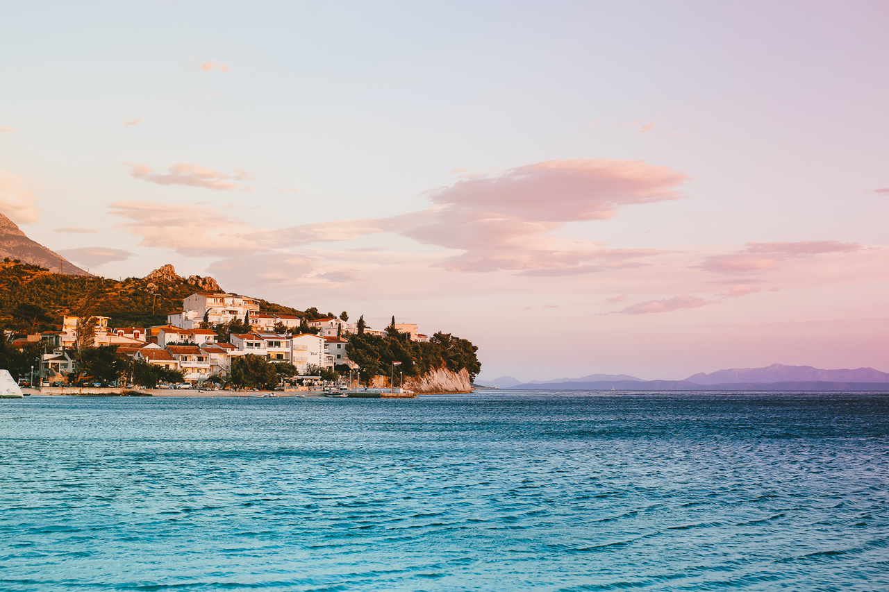

Costa Amalfitana

La Costa Amalfitana es una de las costas más bonitas de Europa. Los encantadores pueblitos que la conforman, están unidos por una sinuosa carretera que serpentea entre infinitos campos de olivos, viñedos y limoneros que llenan todo el camino de inspiradores aromas acompañando todo el recorrido. Las construcciones de sus casas, iglesias y callejuelas parecen estar aferrándose a los escarpados y vertiginosos acantilados que son azotados en la parte baja de las rocas por un mar profundamente turquesa.
Salerno
Viajar a Salerno tiene un encanto particular, su belleza está en su litoral rico en playas que se encuentran casi a la altura de las construcciones de su ciudad. Aunque su costa es angosta y con poca profundidad de arena, las playas son tranquilas y la gran mayoría gratuitas. Para conocer la ciudad recomendamos que te dejes llevar por sus calles y comercios o reservando esta visita guiada por Salerno para no perderte nada. Además de que Salerno te servirá como una excelente base por su buena ubicación, desde ella salen varias excursiones desde su puerto, una que recomendamos mucho es la excursión a Capri que es un imperdible en tu viaje por la Costa Amalfitana o también puedes hacer una excursión en barco para conocer Amalfi y Positano.
¿Cómo llegar?
Desde Nápoles puedes llegar en tren hasta Salerno. Existe la línea “la Circumvesuviana” que deberás ubicarla una vez que estés en la estación central de Nápoles. El viaje tiene una duración de 55 minutos y el costo del ticket es de 7.00 euros. Los trenes salen cada 30 minutos.
¿Dónde dormir?
Hospedarse en el B&BAl Golfo ubicado en Salerno, a 3,9 km del puerto, es un encantador bed and breakfast lleno de detalles y hermosamente decorado. Está muy cerca a la playa a la que puedes llegar caminando y además está cerca de la estación de bus y tren.
Aquí te dejo ofertas de alojamientos en SALERNO.
¿Quéres visitar otros lugares? Hoteles que te recomendamos
| Hoteles | IL BORGO di Iaconti | Panariello Palace | Hotel le Rocce - Agerola, Amalfi Coast |
|---|---|---|---|
| Ubicacion | 64 Via Iaconti, 84019 Vietri sul Mare | VIA PENDOLA 25, 80051 Agerola | Via Belvedere 73, 80051 Agerola |
| Normas de la casa | |||
| Entrada | 14:00 a 22:00 | 13:30 a 22:00 | 15:00 a 23:30 |
| Salida | Disponible 24 horas | 07:30 a 10:00 | 00:00 a 10:00 |
| Cama para niños | Cuna a peticion gratis | El precio de camas supletorias no estan incluidos en el precio total, aproximada €25 | Cuna a peticion gratis |
| Restricción por edad | No hay edad mínima para el check-in | ||
| Mascotas | Adminitidos. Se pueden aplicar suplementos. | No se admiten | |
| Metodos de pago | Maestro, Mastercard, Visa, CrtaSi, American Express, Efectivo | Efectivo por gastos adicionales | Maestro, Mastercard, Visa, Efectivo |
Podes obtener más información en los siguientes links:
¿Cuándo viajar a la Costa Amalfitana?
El mejor momento para visitar La Costa Amalfitana es primavera (Mayo o Junio) y también en Septiembre. En Agosto el calor es muy sofocante, te lo desaconsejamos.
¿Cómo moverse dentro de La Costa Amalfitana?
Como les indiqué anteriormente, tomen sus precauciones para moverse dentro de ella. Tienen buses, ferries y pueden ir en auto. Todas ellas tienen pros y contras.- En bus:Los pueblitos están bien comunicados, cuentan con numerosos y frecuentes buses. Les recomiendo que en las estaciones de buses pidan la información de los horarios. Tengan en cuenta que a veces los buses demoran en llegar porque no son muy puntuales.
- En ferris:Hay ferris que conectan muchas localidades pero tengan en cuenta que la frecuencia de estos es escasa, en algunos casos dos al día, los horarios son definidos pero variables (les aconsejo preguntar los horarios en las oficinas turísticas ya que varían por estaciones).
- En auto:Ir en auto te dará autonomía, sin lugar a dudas, bien sea en auto propio o en un auto alquilado. Lo que sí debes tener en cuenta es que hay mucho tráfico por ser una de las zonas más visitadas de Italia y, las carreteras son estrechas, por lo que debes saber manejar muy bien. Además, los estacionamientos son escasos. Ten en cuenta que si vas en auto vean que sus hospedajes cuenten con playa de estacionamiento interno
- Con tours: Si no quieres romperte la cabeza ni marearte tanto, te recomiendo tomar un tour por la Costa Amalfitana y dependiendo de tu ubicación también tienes alternativas con excursiones que salen desde varias ciudades. Revísalas para que veas cuál te conviene.